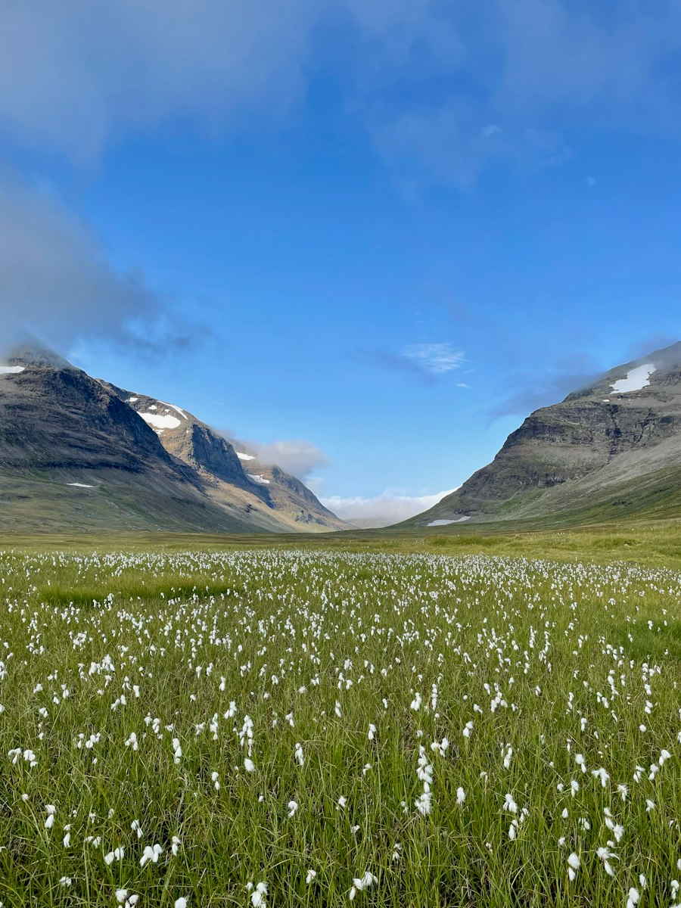
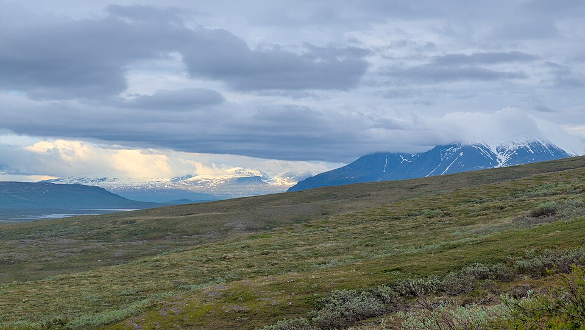
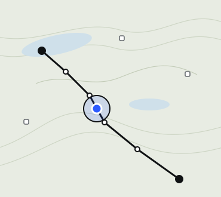

Головний флоу · MAIN JOB
Десять екранів підряд — рівно той шлях, на якому людина перестає бути інтеграційним шаром
«Коли я планую багатоденний похід у горах, я хочу бути впевненою, що маршрут, ночівля, спорядження й погода узгоджені між собою, щоб не бути самою тим, хто зводить чотири розрізнені джерела в одне ціле.»
Тут стоять справжні макети з набору — не перемальовані, а витягнуті з тих самих
файлів, тому сторінка не розходиться з ними. Кожен крок підписаний позицією джоб.крок,
рішенням із flows.md і гілками, які з цього рішення виходять. Гілка
веде на намальований стан; там, де стану ще немає, вона лишається текстом, а не битим посиланням.
Чому саме ці кроки. Це happy path головного джоба: від пошуку до сьогоднішнього дня в поході. Дві поверхні нас відрізняють — новий план (крок 03), де видно ночівлі, квитки й навантаження до збереження, і план (крок 06), де зверху загальні алерти, а під ними дні зі своїми. Порядок: пошук → генерація → новий план → збереження → план → день.
- 7 екранів у хребті
- 3 тапи до плану
- 19 гілок і станів названо
- 0 битих виходів
Where to go
0.1 · catalogue.html · вкладка Map · jobs 1 · 2 · MAIN
Where to go
Best in Sweden in August
-
Kungsleden · Abisko → Nikkaluokta6 days 101 km · 1,940 m · 5 STF huts · blå / medium
 Anders Norén · Unsplash
Anders Norén · Unsplash -
Kungsleden · Abisko → Kebnekaise5 days 82 km · 1,460 m · 4 STF huts · blå / medium

Anders Norén · Unsplash -
Padjelantaleden · Kvikkjokk → Ritsem7 days 140 km · 900 m · STF and Sami community huts

Trougnouf · CC BY 4.0
Scandinavian classics
Вхід у продукт і без візарда: один компонент пошуку «Куди · Коли · Хто», як в Airbnb чи Booking, над картою на весь екран.
Куди — регіон, пресет або свій маршрут «звідки → куди». Точки старту й фінішу задані заздалегідь (станції, входи на мережу, хижі), тож маршрут ніколи не сходить з маркованої мережі. Поки план не складено, на карті видно лінію, кілометри й дні. Коли — точні дати. Хто — кількість людей і скільки з них члени.
Пресети з фото, привʼязані до точок на карті: «Найкраще в країні в місяць» і «Класика Скандинавії».
Рішення
Під ці дати щось є?
- так — пресет або свій маршрут → генерація
- ні
catalogue-empty.html— у лютому хижі зачинені — інші дати
↓пресет або свій маршрут
Генерація
0.2 · new-plan-loading.html · вкладка Map · jobs MAIN
Kungsleden · Abisko → Nikkaluokta
Plan status
- Building your plantrails · nights · load · transport · weather4 of 6
Route
What you need
Days
Notes and reviews
Прохідний екран: скелетон нового плану й прогрес — план проявляється на тому самому місці.
Структурований вивід claude-opus-5 у схему плану; пошук по графу хиж.
Рішення
Маршрут складається?
- так — новий план
- ні
new-plan-conflict.html— зберегти не можна, виходи названо: +2 дні · інший фініш · намет - критичне джерело
new-plan-error.html— плану немає, спробувати ще раз
↓серверний виклик claude-opus-5
New plan ⭐
0.2 · new-plan.html · вкладка Map · jobs 1 · 2 · 4 · 6 · 9 · 11 · MAIN
Photo · Anders Norén · Unsplash
- 101 kmdistance
- 1,940 mascent
- 6days
- ~8 hlongest day
Kungsleden · Abisko → Nikkaluokta
17–22 August · 2 people · 1 STF memberchangePlan status
Everything fits.
Route
 © Kartverket · Lantmäteriet
© Kartverket · Lantmäterietblå / medium · röd / krevende on the pass
What you need
Days
- Getting there · Sun 16 Augnight train 94 · Stockholm C → Abisko
- 1 · Abisko → Abiskojaure14 km · ~4 h 30 · Abiskojaure fjällstuga
- 2 · Abiskojaure → Alesjaure22 km · ~7 h · Alesjaure fjällstuga
- 3 · Alesjaure → Tjäktja13 km · ~4 h 30 · Tjäktja — walk-in onlyby 18:00
- 4 · Tjäktja → Sälka12 km · pass 1,150 m · Sälka fjällstuga
- 5 · Sälka → Kebnekaise26 km · ~8 h · Kebnekaise fjällstation
- 6 · Kebnekaise → Nikkaluokta19 km · ~5 h
- Getting back · Sat 22 Augbus 91 Nikkaluokta → Kiruna · train 92
Notes and reviews
Новий план, ще не збережений. Заглавне фото — з точки старту; під ним один рядок «дати · хто».
Коли все сходиться — одна плашка, а не текст. Статуси тільки там, де щось не так.
Рішення
Що людина робить?
- змінити ночівлю
huts.html— хижі поруч, компактні картки - нотатки й відгуки
notes.html— нотатка може змінити план, відгук — ніколи - зберегти
plan.html— план переїжджає в «Плани» — акаунт уже є - скасувати
catalogue.html— план зникає
↓тап по дню · змінити ночівлю
Інша хижа
2.2 · huts.html · вкладка Map · jobs 2
↓хижа обрана
Plan ⭐
0.3 · plan.html · вкладка Plans · jobs 1 · 3 · 4 · 7 · 9 · MAIN
Photo · Anders Norén · Unsplash
available offline
- 101 kmdistance
- 1,940 mascent
- 6days
- ~8 hlongest day
Kungsleden · Abisko → Nikkaluokta
17–22 August · 2 people · 1 STF member
Overview
Change plan
Booking and ticket marks in the plan will be reset. They stay in STF and SJ — cancel there if you need to.
Needs attention
Route
© Kartverket · LantmäterietAbout the trip
Days
- Getting there · Sun 16 Augnight train 94 · Stockholm C → Abisko
- 1 · Abisko → Abiskojaure14 km · ~4 h 30
- 2 · Abiskojaure → Alesjaure22 km · ~7 hflood
- 3 · Alesjaure → Tjäktja13 km · ~4 h 30 · walk-in only
- 4 · Tjäktja → Sälka12 km · pass 1,150 m · Sälka not bookedbook
- 5 · Sälka → Kebnekaise26 km · ~8 h
- 6 · Kebnekaise → Nikkaluokta19 km · ~5 h
- Getting back · Sat 22 Augbus 91 → Kiruna · ticket not boughtbuy
Збережений план: зверху загальні алерти, під ними дні, кожен зі своїми алертами.
Бронь Sälka — на дні 4, квиток на автобус — на дорозі назад: кожна задача на своїй сутності. Алерт веде туди, де його виправляють. Офлайн-пакет качається сам по Wi-Fi.
Рішення
У якому стані план?
- без мережі
plan-offline.html— плашка зверху - не оновився
plan-error.html— плашка зверху - пройдений
plan-past.html— з нього рахується темп - змінити план
new-plan.html— з попередженням: позначки броней і квитків скинуться - забронювати
booking.html— поза основним флоу: порядок, дедлайн, передача в STF, номер броні
↓«Зберегти план» — план у «Планах»
Day
0.4 · day.html · вкладка Plans · jobs 1 · 2 · 3 · 6
Day 3 · Wed 19 August
Leg
 © Kartverket · Lantmäteriet
© Kartverket · Lantmäteriet
- 13 kmdistance
- +260 mascent
- ~4 h 30walking
Night
Arrive by 18:00 · logbook: names and membership numbers.
On this section
- Bridge before Tjäktja washed outnote · 6 Aug · ford knee-deepford
- Waterstreams every 2–3 km
- Surface8 km of boardwalk, 5 km of rock
Weather
+9 °C · rain 4 mm · wind 7 m/s · met.no
День — окрема сторінка: перехід, ночівля, умови, погода. Між днями — стрілки й свайп.
Розділ без змісту не показується.
Рішення
Далеко до дня?
- понад 10 днів
day-seasonal.html— сезонна норма, не прогноз - без мережі
day-offline.html— з офлайн-пакета
↓тап по дню
Сьогодні
0.4 · day-intrip.html · вкладка Plans · jobs 3 · 6
Today · Alesjaure → Tjäktja
Now
- 9 kmto go
- ~3 hwalking
- 18:00arrive by

© Kartverket · LantmäterietNight
On this section
Weather
+9 °C · rain from 15:00 · wind 7 m/s
У поході вкладка «Плани» відкриває сьогоднішній день. Один екран без скролу, SOS постійно.
Скільки лишилось, до котрої прийти, брід, погода — і кнопка «Написати нотатку з місця».
Рішення
Щось на ділянці не так, як на карті?
- так
notes.html— написати нотатку з місця
↓настав день виходу